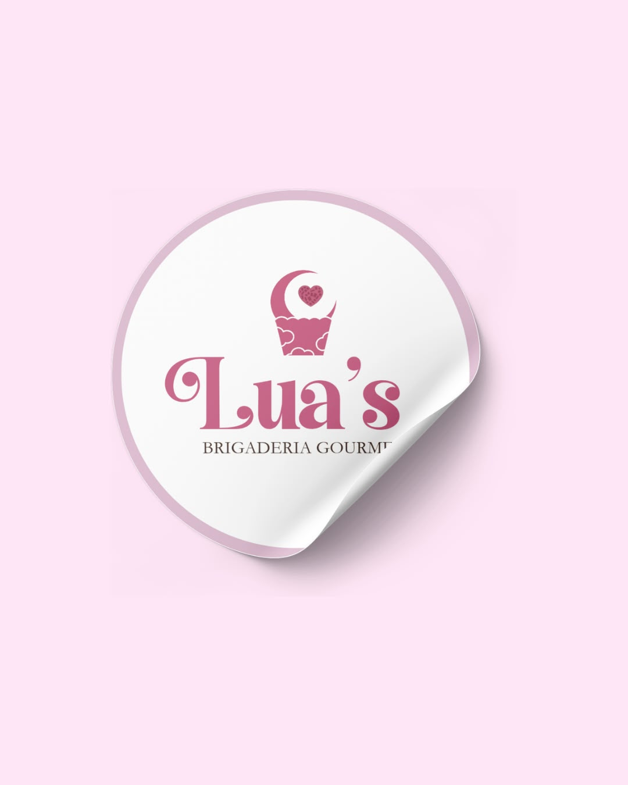
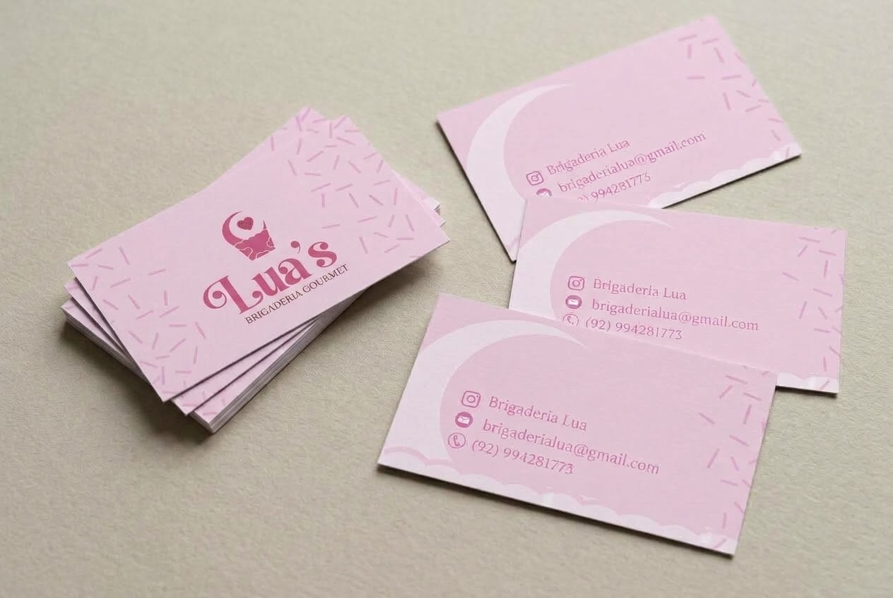
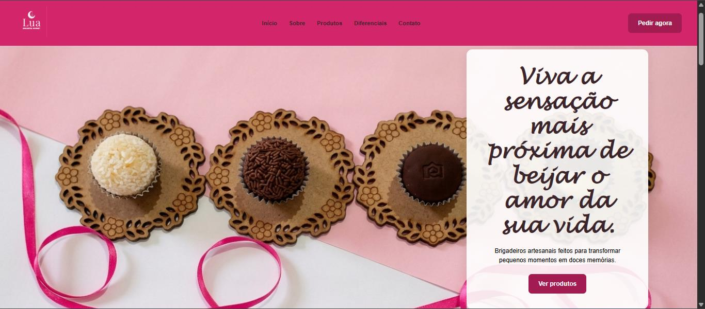
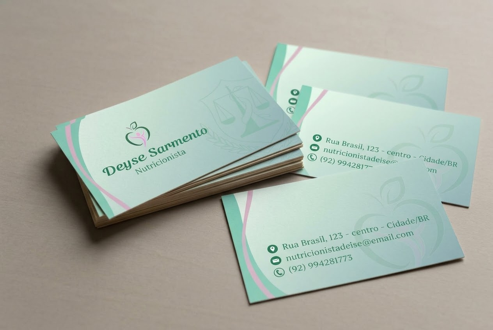
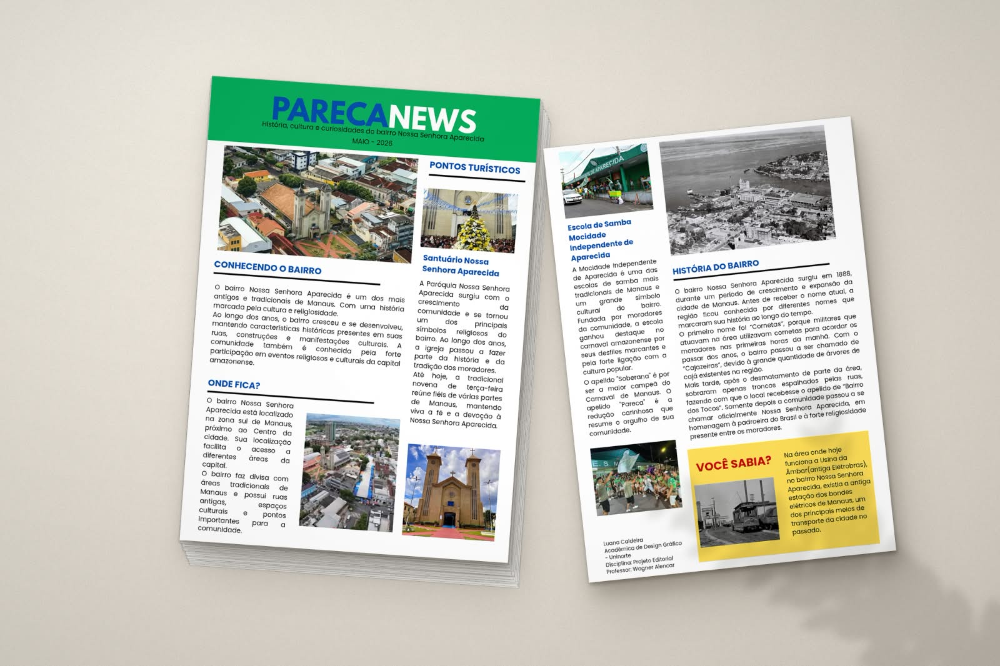
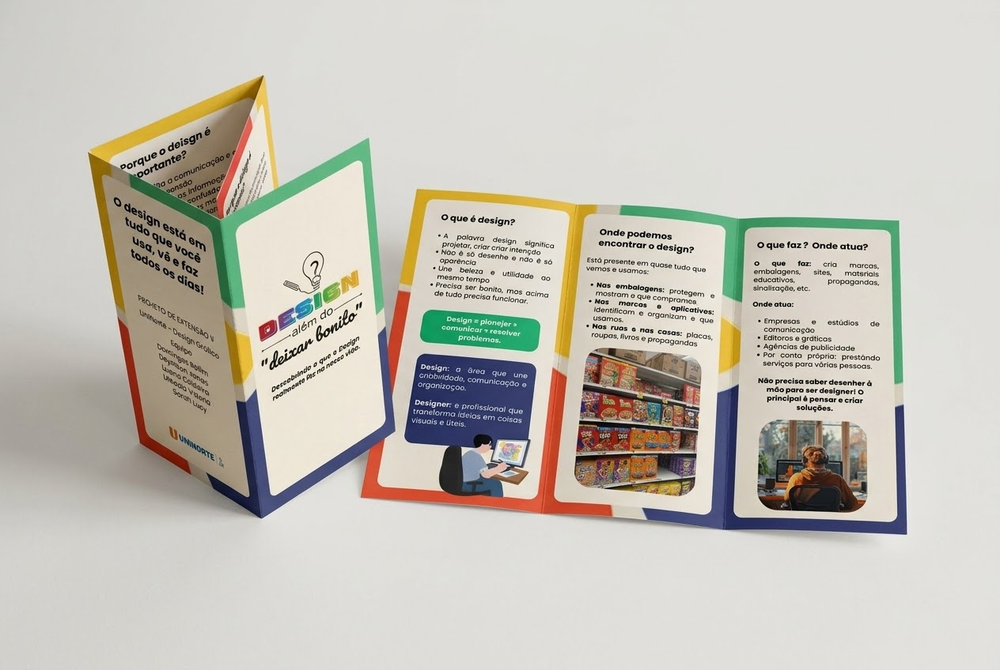

Projeto Lua's Brigaderia Gourmet
A Lua´s Brigaderia Gourmet é um projeto de desenvolvimento da minha própria marca de brigadeiros artesanais. A proposta é apresentar o brigadeiro gourmet para além dos tradicionais docinhos de festa, valorizando-o como um produto que proporciona prazer, afeto e pequenos momentos de felicidade. A marca busca transmitir qualidade, cuidado artesanal e sofisticação, criando uma experiência que vai além do sabor.
Memorial Descritivo
O projeto envolve o desenvolvimento da identidade visual, a definição do conceito da marca e a construção de sua comunicação. Também contempla a criação de materiais gráficos e o desenvolvimento de um site institucional para apresentar a marca, seus produtos e facilitar o contato com os clientes. O site está sendo desenvolvido com HTML, CSS e JavaScript, buscando uma interface intuitiva, organizada e adaptável a diferentes dispositivos.


Papelaria
Criação de cartões de visita personalizados para diferentes profissionais e negócios, buscando transmitir suas identidades visuais, organizar informações de contato e fortalecer sua apresentação profissional.
Memorial Descritivo
O projeto foi desenvolvido no Canva, explorando conceitos de composição, tipografia, cores e organização visual. Cada cartão foi elaborado considerando a identidade e as características de cada cliente, buscando criar materiais atrativos, funcionais e personalizados.


Editorial
Desenvolvimento de dois materiais editoriais impressos, pensados para comunicar de forma clara e acessível. O jornal informativo de bairro conta a história da comunidade e reúne acontecimentos recorrentes, curiosidades e destaques. O folder do projeto de extensão traz materiais de apoio distribuídos no dia da apresentação, com conteúdos para leitura e para acompanhar a fala durante o projeto.
Memorial Descritivo
O projeto envolveu a organização e diagramação de conteúdos informativos, utilizando recursos de design editorial, tipografia, composição e hierarquia visual. A proposta foi criar materiais de fácil leitura, com informações bem distribuídas e uma apresentação visual organizada.